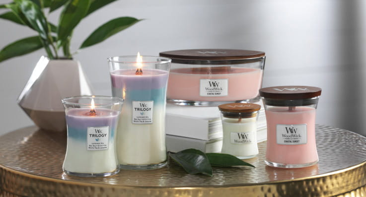

Kvapnios žvakės

Juodos kvapnios žvakės aprašymas:
Ši žvakė yra elegantiška ir tamsaus juodo parafino.
Jos kvapas yra paslaptingas ir įtraukiantis, su švelniais subtiliais tonais,
primenančiais egzotišką miškingų užuominų aromatą.
Kai uždegama, ji pripildo erdvę siauru, tačiau žavinančiu kvapu, kuris kviečia pailsėti
ir praleisti ramų vakarą.

Kvapni žvakė su varpo formos danteli:
Ši žvakė yra įdomios varpo formos, įkvepianti puošniu danteliu, kuri leidžia jai išsiskirti iš kitų tradicinių žvakių.
Ji patraukli stikliniame inde, kuris ne tik apsaugo nuo vėjo, bet ir leidžia mėgautis žvakės spalvos šviesa,
tarsi jauki žibinteliu. Jos aromatas yra švelnus ir romantiškas, primenantis žydinčių žiedų sodus.
Tai puikus pasirinkimas, norint sukurpti jaukią, romantinę atmosferą.

Kvapni žvakė įvairių formų ir spalvų stikliniame inde:
Ši žvakė yra tikras vizualinis stebuklas! Stiklinis indelis sukasi ir glūdi permatomos spalvos žvakė,
įvairių formų ir spalvų. Ji yra tikra dekoracija bet kuriai erdvei. Kvapnas yra daugiasluoksnis ir įvairiapusiškas,
subtiliai maišydamas vaisių gėrybes, gaivią citrusinių vaisių toniką ir sodrios gėlės akcentus.
Ši žvakė suteikia ne tik ypatingą aromatą, bet ir atskleidžia kūrybingumą ir eleganciją jūsų namuose.